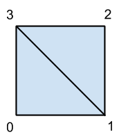

some links
展示使用three.js时，如何在立方体geometry的一个面上使用多个拼接的texture，用于载入高质量图时分块载入图片
multiple Textures for one cube face in three.jsmain code:
var a= [new THREE.Vector2(0,1),new THREE.Vector2(0,0), new THREE.Vector2(1,1) ];
var b= [new THREE.Vector2(0,0),new THREE.Vector2(1,0), new THREE.Vector2(1,1) ];
for(var i=0;i<48;i=i+2){
cubeGeometry.faceVertexUvs[0][i] = a;
cubeGeometry.faceVertexUvs[0][i+1] = b;
var randomIndex=Math.round(Math.random()*8);
cubeGeometry.faces[i].materialIndex=randomIndex;
cubeGeometry.faces[i+1].materialIndex=randomIndex;
}
如何将整张图片作为texture映射到一个立方体上
http://solutiondesign.com/webgl-and-three-js-texture-mapping/观念：uvmapping
将整个texture作为map映射到object上，u，v代表横竖坐标
在threejs中，每个正方形面是两个三角形拼成的
main code:
var bricks = [new THREE.Vector2(0, .666), new THREE.Vector2(.5, .666), new THREE.Vector2(.5, 1), new THREE.Vector2(0, 1)];
var clouds = [new THREE.Vector2(.5, .666), new THREE.Vector2(1, .666), new THREE.Vector2(1, 1), new THREE.Vector2(.5, 1)];
var crate = [new THREE.Vector2(0, .333), new THREE.Vector2(.5, .333), new THREE.Vector2(.5, .666), new THREE.Vector2(0, .666)];
var stone = [new THREE.Vector2(.5, .333), new THREE.Vector2(1, .333), new THREE.Vector2(1, .666), new THREE.Vector2(.5, .666)];
var water = [new THREE.Vector2(0, 0), new THREE.Vector2(.5, 0), new THREE.Vector2(.5, .333), new THREE.Vector2(0, .333)];
var wood = [new THREE.Vector2(.5, 0), new THREE.Vector2(1, 0), new THREE.Vector2(1, .333), new THREE.Vector2(.5, .333)];
geometry.faceVertexUvs[0][0] = [ bricks[0], bricks[1], bricks[3] ];
geometry.faceVertexUvs[0][1] = [ bricks[1], bricks[2], bricks[3] ];
geometry.faceVertexUvs[0][2] = [ clouds[0], clouds[1], clouds[3] ];
geometry.faceVertexUvs[0][3] = [ clouds[1], clouds[2], clouds[3] ];
geometry.faceVertexUvs[0][4] = [ crate[0], crate[1], crate[3] ];
geometry.faceVertexUvs[0][5] = [ crate[1], crate[2], crate[3] ];
geometry.faceVertexUvs[0][6] = [ stone[0], stone[1], stone[3] ];
geometry.faceVertexUvs[0][7] = [ stone[1], stone[2], stone[3] ];
geometry.faceVertexUvs[0][8] = [ water[0], water[1], water[3] ];
geometry.faceVertexUvs[0][9] = [ water[1], water[2], water[3] ];
geometry.faceVertexUvs[0][10] = [ wood[0], wood[1], wood[3] ];
geometry.faceVertexUvs[0][11] = [ wood[1], wood[2], wood[3] ];
使用react.js生成一个当前页面模块的组件
linkcomponent.htmlreact.js是用于创建组件化UI的javascript类库。在react中，数据是很重要的一部分，它的初衷就是处理数据更新频繁的页面。创建一个react组建的方式是从界面出发，将界面分为各个组件，每个组件拥有自己的数据，并且只需要各自的数据就能被生成。
main code:
one line for one component